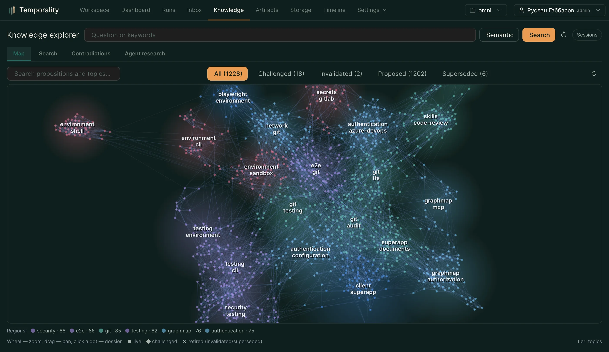

Знания
Как агент накапливает опыт — жизненный цикл знаний, карта областей, досье, противоречия, битемпоральность.

Знания — проверяемый слой опыта: утверждения об окружении, инструментах и решениях, извлечённые из реальных траекторий. В отличие от «памяти»-свалки, у каждого знания есть автор, происхождение, статус и история изменений. Страница Знания (/knowledge) — рабочая поверхность и для человека, и
для агента (тул knowledge_explore).
#Жизненный цикл
предложено → подтверждено → (оспорено → исправлено | заменено | инвалидировано)
- Предложено — извлечено из рана, ещё не проверено.
- Подтверждено — применилось и сработало (или подтверждено человеком).
- Оспорено — обнаружено противоречие; знание на проверке.
- Исправлено / Заменено / Инвалидировано — терминальные исходы с сохранением истории: кто, когда и почему.
«Живые» знания — то, что система готова подсказать агенту. Устаревшие («под риском») показываются с пометкой и переоцениваются.
#Карта областей
Treemap-карта группирует знания по темам и сущностям: размер плитки — количество знаний, цвет — преобладающее состояние, красная метка — противоречия. Клик по области — стиковый фильтр списка знаний.
Кнопка «Упорядочить» запускает модель-судью (та же, что в контуре качества): она сводит дубли и варианты («playwright», «playwright e2e») к каноничным областям и прячет мусор (имена файлов и т.п.). Знания при этом не изменяются — редактируется только «линза» отображения.
#Поиск и фильтры
- Компактные фильтры: состояние, область видимости, тип (утверждение/наблюдение), происхождение, тема, сущность.
- Поиск по смыслу — вопрос словами; результаты объясняют, почему совпали.
- Битемпоральные фильтры — посмотреть базу «как она была»: на дату события или в момент известности (кто и когда что знал). Полезно для разбора инцидентов.
#Досье знания
Клик по знанию открывает досье: формулировка, статус и история переходов, первоисточники (ссылки на конкретные события рана), связи с другими знаниями (подтверждает/противоречит/выведено из), статистика применений.
Из досье: оспорить, исправить, инвалидировать — с причиной и доказательствами. Оспорить или инвалидировать можно и прямо из трейса рана — кнопка ⚑ на событии, которое ссылается на знание: сомнение фиксируется не отходя от места, где вы его заметили. Это действия человека; агент помечает сомнения, но жизненный цикл двигаете вы.
#Противоречия
Вкладка Противоречия собирает пары знаний, которые утверждают разное об одном: сравнение бок о бок и решение (оставить одно, исправить, оба — устарели).
#Исследовательские сессии
Текущий вопрос, фильтры и выбранная область сохраняются как сессия — к
ней можно вернуться позже. Агент тоже исследует базу тула-ми
knowledge_explore (orient/search/expand/trace/compare/synthesize), и его
исследования видны отдельной вкладкой.
Подробности механики — docs/knowledge-model.md, docs/knowledge-evolution.md,
docs/human-knowledge-explorer.md.